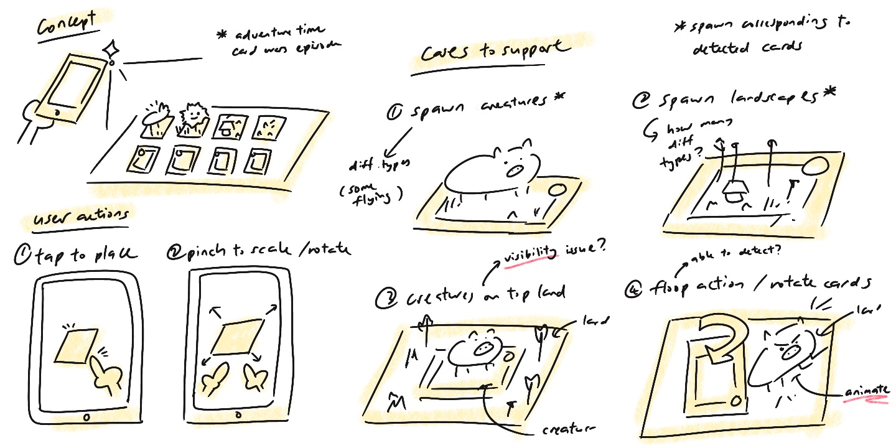

I have always loved Adventure Time Card Wars (both the cartoon and the game) when I was a kid.
Back when the official mobile app Card Wars Kingdom was released,
I was so excited to play it that I timidly asked my dad to pay 50 ringgit (which back then was a lot of money) to download the game.
Sadly, the game was discontinued in 2020, which was disheartening to many fans like me.
Ever since, I thought it would be amazing to turn it into an AR game, after all, in the cartoon, the whole premise is that holographic creatures spawn and fight when you play cards.
It's the perfect match for augmented reality. With that I started planning and working on it, hoping to make this vision a reality (Github Page).
prototyping:

The prototype is built in Unity and was tested on a Honor 70 phone.
As ARFoundation is used, it supports most of the modern Android and iOS devices (see Supported Devices).
I originally wanted to build it for Meta Quest headsets to take advantage of their immersive gameplay potential.
However, the fundamental component would require image tracking, which is not currently efficiently supported in Quest devices (though I believe soon new features will be able to support it).
In the future, it would be exciting to expand the project to more VR/AR devices (especially AR glasses) for a more immersive experience.
requirements:
Requirement 1: Track cards and spawn the corresponding model
Requirement 2: Detect horizontal plane and spawn the game field
Requirement 3: Detect actions performed on cards by users
Requirement 4: Move, rotate, and scale models according to user actions
solution:
AR Tracked Image Manager
Used AR Tracked Image Manager to recognise specific cards from a predefined library.
Each recognised card triggers a listener that instantiates the corresponding prefab with the right position, rotation, and scale.
AR Plane Manager and AR Raycast Manager
The plane manager detects flat surfaces (horizontal in this case), while the raycast manager translates user taps on the screen into real-world positions on the plane.
Euler Angles
Implemented card rotation to simulate the “floop” action (rotating a card 90° to trigger a special move).
The prototype detects when a card is rotated perpendicular to the field and plays a simple animation to demonstrate the effect.
Lean Touch
Integrated Lean Touch, which made it easy to add pinch-to-scale, drag-to-move, and twist-to-rotate interactions.
These components were attached directly to the game field prefab for intuitive manipulation.
areas of improvement:
Add support for VR/AR headsets (e.g., Meta Quest, AR glasses) for a more immersive experience.
Expand the card library to include more characters, attacks, and effects.
Replace placeholder animations with more complex battle animations.
Add multiplayer support so players can battle against each other in AR.